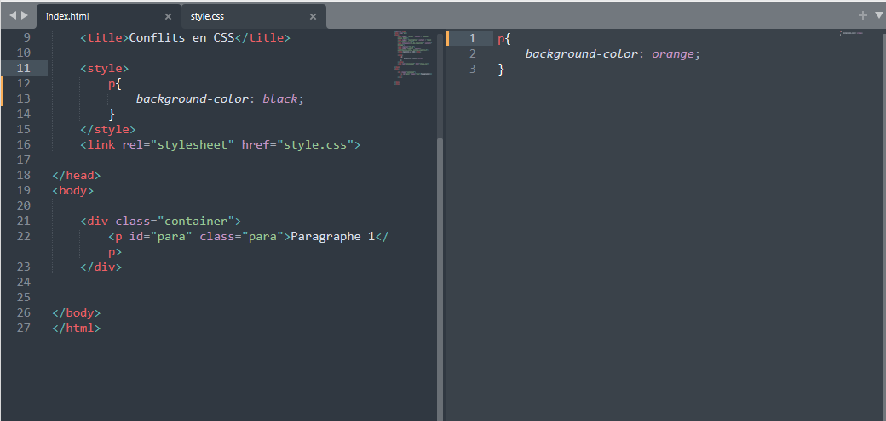
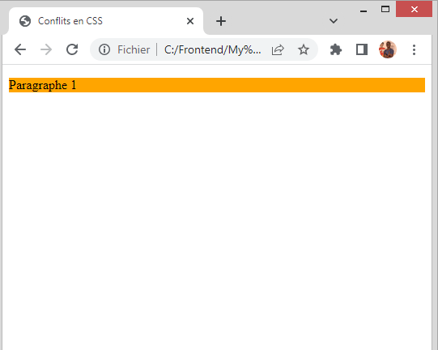
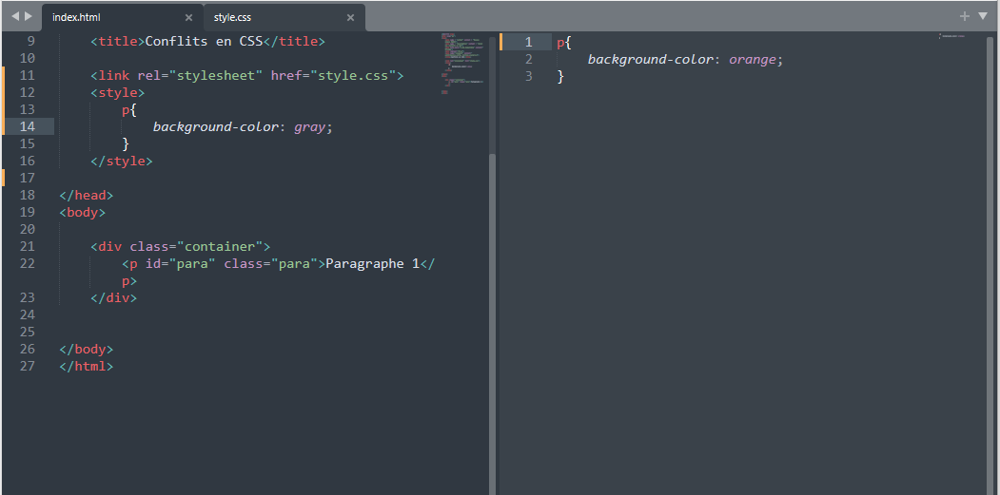
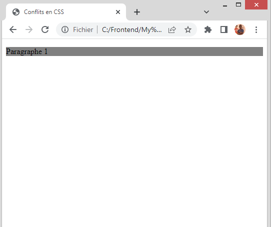
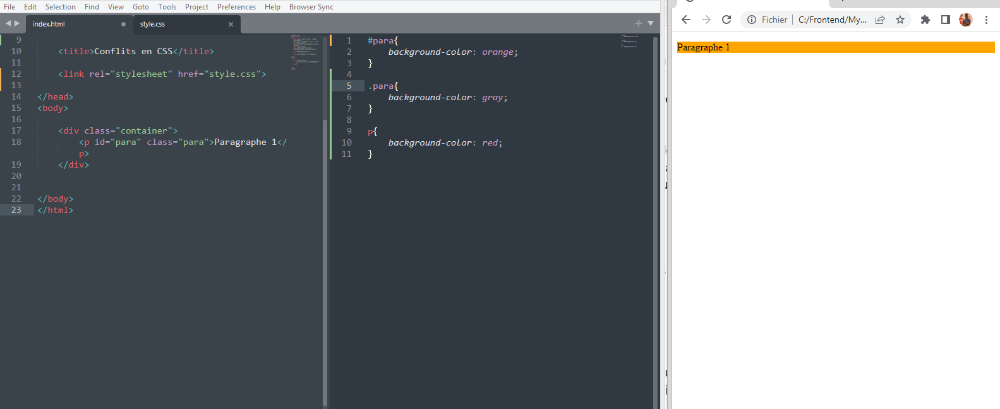

Comment connaître l'ordre de priorité en CSS et gérer les conflits entre sélecteurs ?

Il y a plusieurs façon de cibler un élément en CSS. On peut utiliser :
- L'élément lui même, par exemple
p{color:red} - L'attribut
id - L'attribut
class - etc
On peut aussi placer notre code CSS sur trois différents endroits :
- Dans l'élément lui même avec l’attribut
style - Placer l'élément
styledans l'élémenthead - Écrire le CSS dans un fichier externe puis l’inclure dans le HTML en utilisant la balise
link.
Quel est l’ordre de priorité dans ce cas?
Vous avez sûrement entendu dire que c’est toujours le style le plus proche de l'élément qui sera appliqué. Ce qui veut dire que c’est le style qui est dans l'attribut style qui est prioritaire, ensuite celui qui est dans le head avec la balise style et enfin celui qui se trouve dans le fichier externe.
Mais est-ce toujours le cas?
Noter que cette théorie n’est valable que pour l’attribut style qui se trouve dans l'élément lui-même. Quel que soit le sélecteur utilisé ou bien l’endroit dans lequel vous écrivez vos styles CSS, l’attribut style est toujours prioritaire.
Cependant, tel n’est pas le cas pour les deux autres cas restants. Le fait d'écrire vos styles dans le
head ne veut pas forcément dire que ce sont ces styles qui seront prioritaires par rapport à ceux écrits dans le fichier externe.
Voyons voir de quoi cela dépend.
Cas d’un même sélecteur
Quel sera le background-color du paragraphe selon vous?
Voici le résultat
Quel sera le background-color pour celui ci encore ?
Voici le résultat
Mais… Comment est-ce possible ?
Explication
Retournez sur le premier code et regarder comment on a placé la balise style par rapport à la balise link. Faites le pour le deuxième aussi.
Qu’avez vous remarqué ?
Et bien on constate que quand style est au dessus de link, c’est le style qui est dans le fichier externe qui est appliqué. Alors que quand on place link au dessus de style, c’est le style qui est dans style qui est appliqué.
Mais pourquoi?
L’explication est assez simple, c’est parce que tout simplement le navigateur lie notre code de haut en bas, ce qui veut dire que c’est toujours le style qui est lu en dernier qui sera appliqué, même si vous écrivez le style dans un même fichier .
Pour le premier cas, le fichier externe est lu en dernier. Et pour le deuxième cas, c'est la balise style qui est lu en dernier.
Je précise qu’on est dans le cas d’un même sélecteur.
Cas de sélecteurs différents ( id, class, element )
Dans ce cas, le principe est un peu différent car le style de l'élément ne va pas dépendre de l’ordre de positionnement de style ou de link. Cela va dépendre du sélecteur utilisé. id est le plus précis, suivi de class et enfin l'élément lui-même, quel que soit l’ordre dans lequel vous écrivez les styles.
Voici un petit aperçu :
On se rend compte que le background-color est au orange alors que c’est p qui est lu en dernier. Donc c’est l’id qui est le plus précis !
Tips
Basez-vous sur ces explications et essayez par vous même de changer l’ordre des sélecteurs, écrivez sur différents endroits puis constatez, analysez et enfin concluez !
C’est la meilleure manière d’apprendre !